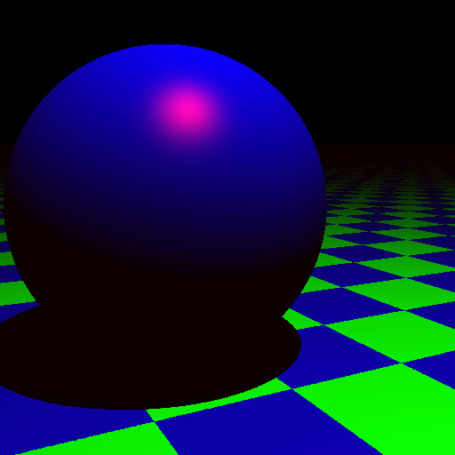
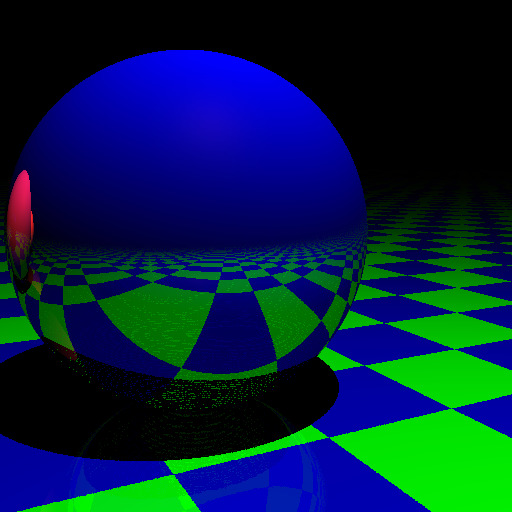

Rendering
A Step-By-Step Introduction to Rendering
The very first step for in any application of the ray tracer is to define the scene parameters. This refers to
Screen Size: We are defining it as a named tuple but it can be anything you wish.
screen_size = (w = 512, h = 512)Light Source(s): We can either define a single light source or a vector of light sources. Depending on the input the raytracer dispatches to the correct function.
light = PointLight(Vec3(1.0f0), 20000.0f0, Vec3(1.0f0, 5.0f0, -1.0f0))Configuration of the Camera
cam = Camera(Vec3(0.0f0, 0.35f0, -1.0f0), Vec3(1.0f0, 0.0f0, 1.0f0), Vec3(0.0f0, 1.0f0, 0.0f0), 45.0f0, 1.0f0, screen_size.w, screen_size.h) origin, direction = get_primary_rays(cam)(Most Importantly) The Objects present in the Scene
scene = [ SimpleSphere(Vec3(0.75f0, 0.1f0, 1.0f0), 0.6f0, color = rgb(0.0f0, 0.0f0, 1.0f0)), SimpleSphere(Vec3(-0.75f0, 0.1f0, 2.25f0), 0.6f0, color = rgb(0.5f0, 0.223f0, 0.5f0)), SimpleSphere(Vec3(-2.75f0, 0.1f0, 3.5f0), 0.6f0, color = rgb(1.0f0, 0.572f0, 0.184f0)), CheckeredSphere(Vec3(0.0f0, -99999.5f0, 0.0f0), 99999.0f0, color1 = rgb(0.0f0, 1.0f0, 0.0f0), color2 = rgb(0.0f0, 0.0f0, 1.0f0), reflection = 0.25f0) ]
For understanding what every single parameter means refer to the API Documentation. Now that we have defined the entire 3D scene, we need to render it. Currently we support only the blinn phong rendering model. In the next step there is nothing much to configure. The only configurable option is whether we want to have global illumination or not.
Firstly let us try to see the image without global illumination. For this we simply pass the last paramter to raytrace function as any number >= 2.
color_no_gillum = raytrace(origin, direction, scene, light, origin, 2)
img_no_gillum = get_image(color_no_gillum, screen_size...)The generated image should look like this:

Next generate the image with global illumination.
color_gillum = raytrace(origin, direction, scene, light, origin, 0)
img_gillum = get_image(color_gillum, screen_size...)The generated image should look like this:

Complete Script
using RayTracer, Images
screen_size = (w = 512, h = 512)
light = PointLight(Vec3(1.0f0), 20000.0f0, Vec3(1.0f0, 5.0f0, -1.0f0))
cam = Camera(Vec3(0.0f0, 0.35f0, -1.0f0), Vec3(1.0f0, 0.0f0, 1.0f0), Vec3(0.0f0, 1.0f0, 0.0f0),
45.0f0, 1.0f0, screen_size.w, screen_size.h)
scene = [
SimpleSphere(Vec3(0.75f0, 0.1f0, 1.0f0), 0.6f0, color = rgb(0.0f0, 0.0f0, 1.0f0)),
SimpleSphere(Vec3(-0.75f0, 0.1f0, 2.25f0), 0.6f0, color = rgb(0.5f0, 0.223f0, 0.5f0)),
SimpleSphere(Vec3(-2.75f0, 0.1f0, 3.5f0), 0.6f0, color = rgb(1.0f0, 0.572f0, 0.184f0)),
CheckeredSphere(Vec3(0.0f0, -99999.5f0, 0.0f0), 99999.0f0,
color1 = rgb(0.0f0, 1.0f0, 0.0f0),
color2 = rgb(0.0f0, 0.0f0, 1.0f0), reflection = 0.25f0)
]
origin, direction = get_primary_rays(cam)
color = raytrace(origin, direction, scene, light, origin, 0)
img = get_image(color, screen_size.w, screen_size.h)
save("spheres1.jpg", img)Next Steps
- Look into the various objects supported by RayTracer
- Go to the
examples/renderingdirectory for more examples - Try out the inverse rendering examples (after all that is what this library is designed to do).